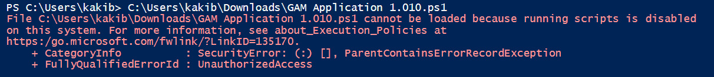
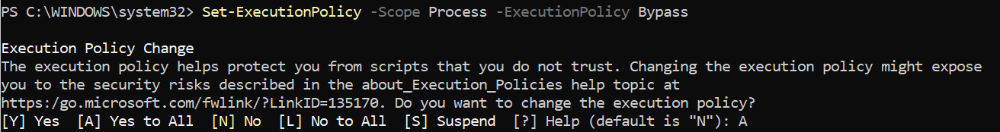
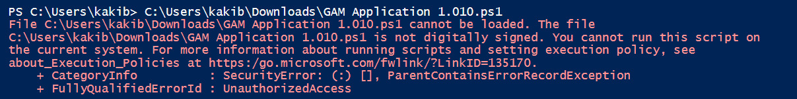
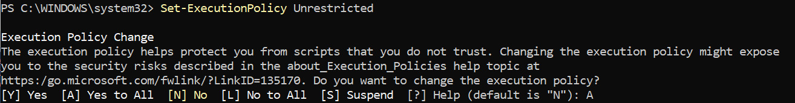
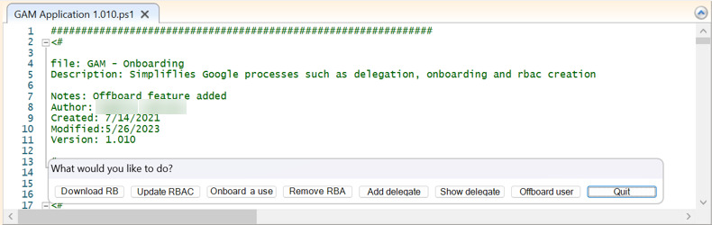

I wrote this for colleagues running our GAM admin script for the first time, which mostly affected Windows 11 users. Two errors kept coming up.
Error 1: “Running scripts is disabled on this system”

- Open PowerShell as administrator.
- Allow scripts for this session only:
Set-ExecutionPolicy -Scope Process -ExecutionPolicy Bypass - Type A (Yes to All) and press Enter.

Process-scoped bypass
That should let the script run. If it doesn't, allow locally created scripts:
Set-ExecutionPolicy RemoteSignedError 2: “The script is not digitally signed”

- Open PowerShell as administrator and run:
Set-ExecutionPolicy Unrestricted - Choose A and press Enter.

Unrestricted - The script now runs.

The script runs
Security note: don't leave a machine on
Unrestricted. When you're done, switch back to a safer policy:
Set-ExecutionPolicy RemoteSignedUnblock-File .\script.ps1 for a downloaded script you trust.